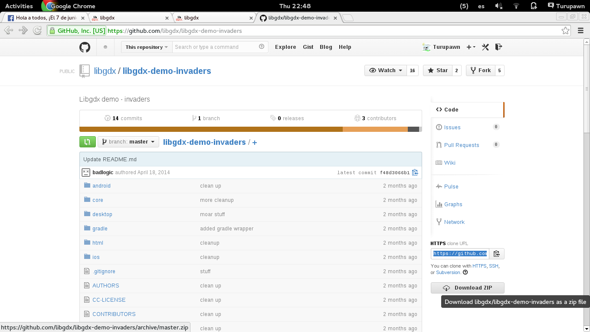
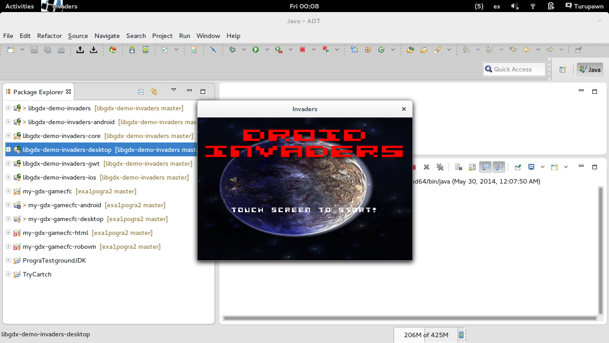

En el ADT Bundle en el menu de arriba vamos a "Help" > "Install New Software.." y clickeamos en "Add..."

LLenamos el formulario con la siguiente informacion:
Name: Groovy
Location: http://dist.codehaus.org/groovy/distributions/greclipse/snapshot/e4.2/
Marcamos todos excepto "m2e Configurator ..."
"Next"
"Finish"

Esperamos que termine la descarga.
Reiniciamos
De nuevo a "Help" > "Install New Software.." y clickeamos en "Add..."
LLenamos el formulario con la siguiente informacion:
Name: Groovy
Location: http://dist.springsource.com/milestone/TOOLS/gradle
********************************************************************************
Si sale un mensaje que dice "No software site found at..." prueba con estos otros links en "Location"
Location: http://dist.springsource.com/snapshot/TOOLS/gradle/nightly
Location: http://dist.springsource.com/release/TOOLS/gradle
Location: http://dist.codehaus.org/groovy/distributions/greclipse/snapshot/e4.2/
Seleccionamos todas y clickeamos "Next".
"Next".
Aceptamos la licencia y "Finish".
Esperamos que termine la descarga.
Reiniciamos.
Vamos a https://github.com/libgdx/libgdx-demo-invaders y descargamos el proyecto como .zip y lo descomprimimos
Dentro de la carpta que descomprimieron ("libgdx-demo-invaders") creamos un archivo llamado "local.properties" (recomendacion para los usuarios de windows: usar notepad++ para crearlo). Escribir y guardar "sdk.dir=XXXX" en el archivo done XXXX es la posición de su carpeta del ADT Bunldle
Por ejemplo el contenido de mi archivo es "sdk.dir=/home/turupawn/Software/adt-bundle-linux-x86_64-20140321"

De nuevo en el ADT Bundle vamos a "File" > "Import" > "Gradle" > "Gradle prject"
Seleccionamos la carpeta que importamos y clickeamos "Ok".
Clickeamos "Build model" y esperamos.
Seleccionamos todos los proyectos y clickeamos "Finish".
En el menu de la izquierda selecionamos "libgdx-demo-invaders-desktop" y clikeamos el boton verde de play en la parte superior. Con esto ejeutamos el juego.
Fuentes
https://github.com/spring-projects/eclipse-integration-gradle/
https://github.com/libgdx/libgdx-demo-invaders/
http://libgdx.badlogicgames.com/documentation.html#gettingstarted